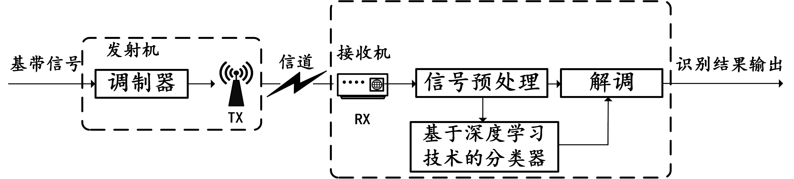
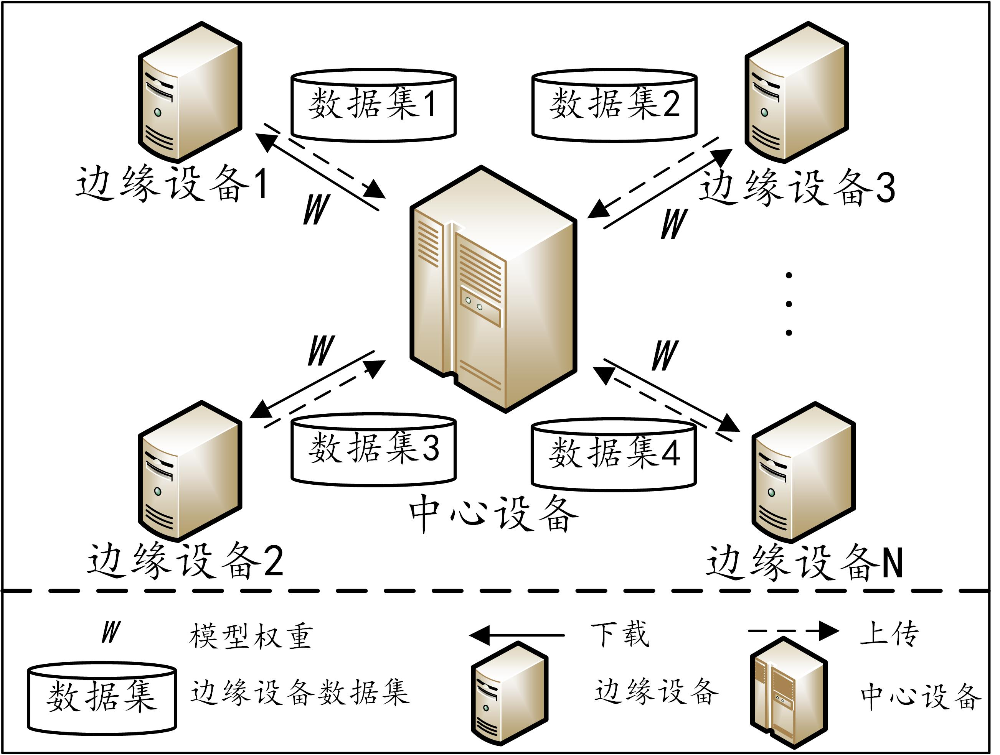
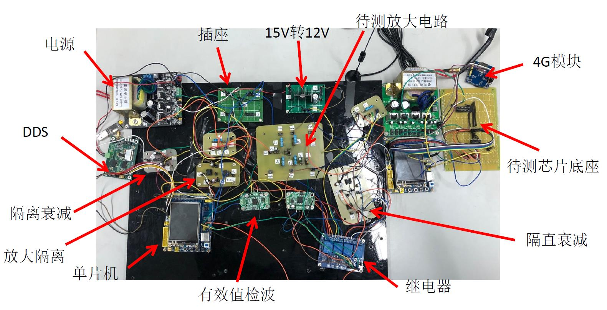

董标 (Biao Dong)
硕士研究生,中共党员 |
关于我
我叫董标，现今在南京邮电大学 通信与信息工程学院攻读硕士学位，电子信息专业，预计2023年6月毕业，研究方向是基于深度学习的自动调制信号分类（部署在边缘设备中）。 在此之前, 我于2020年6月在 江苏理工学院 电气信息工程学院 通信工程专业获得了学士学位, 专业排名:(2/89)。
我的研究兴趣主要包括: 深度学习, 分布式学习, 机器学习, 智能信号处理, 嵌入式系统 等。
教育经历
 |
硕士 南京邮电大学 (2020.9 ~ 2023.6)
|
本科 江苏理工学院 (2016.9 ~ 2020.6)
|
![[成绩单]](pdf/transcript_jsut.jpg){kind=link}
学术论文
A Lightweight Decentralized Learning-based Automatic Modulation Classification Method for Resource Constrained Edge Devices,
Biao Dong, Yuchao Liu,Guan Gui,Xue Fu,Heng Dong,Bamidele Adebisi,Haris Gacanin and Hikmet Sari
IEEE Internet Things J. (IEEE IoT), 2022. Accept, [JCR Q1]
Decentralized Automatic Modulation Classification Method Based on Lightweight Neural Networks
Biao Dong, Guozhen Xu, Xue Fu, Heng Dong, Haris Gacanin and Fumiyuki Adachi
in Proc. IEEE 33nd Annu. Int. Symp. Pers. Indoor Mobile Radio Commun. (PIMRC), 2022. Accept.[PDF]
研究兴趣
基于深度学习的自动调制分类技术
自动调制分类技术通常部署于通信接收方，对接收信号的调制样式进行识别与分类，不仅可为后续信号处理提供解调信息，也可用于识别物理层恶意攻击。 经典的调制信号分类技术主要分为基于似然比的方法和基于特征的方法，二者虽然理论完备，但是存在通用性差、鲁棒性差等缺点。深度学习可自动挖掘输入数据特征并构建分类器， 正被广泛用于自动调制信号分类研究中。分布式优化(联邦优化)
传统的深度学习模型多采用集中式学习进行优化，即每一台边缘设备将本地数据集上传到一台中心设备训练，然后边缘设备再从中心设备上下载训练好的模型权重。 显然，集中式学习有如下缺点：（1）.本地设备上传数据集到中心设备，数据隐私安全无法保证；（2）.海量的数据汇聚到中心设备，给中心设备带来巨大的存储压力； （3）.中心设备对海量数据进行训练，计算压力较大且训练时间较长。 针对集中式学习出现的问题，许多学者尝试采用分布式学习策略。分布式学习中本地边缘设备与远程中心设备之间进行模型权重信息交互，而不是数据集的共享， 避免了本地设备的数据外泄，也减轻了中心设备的存储压力。多台本地边缘设备协同训练可以有效减少中心设备的计算压力，缩短训练时间。
但是现有的分布式训练框架存在如下缺点： 1) 模型权重的多次交互导致分布式训练中的通信开销剧增； 2) 相比于集中式学习，性能有限。如何在保证性能的同时，进一步降低通信开销，是分布式优化中的关键问题。基于嵌入式的简易电路检测装置
电路系统常由于元器件或芯片故障，无法正常工作。而电路故障的检测，往往需要工程人员利用各种仪器反复排查。 对于一些简单的电路故障，工程人员希望通过最简单的方法，直接观测电路性能指标并解决之。 基于嵌入式的简易电路检测装，采用STM32F103单片机作为主控制芯片；在典型三极管放大电路的检测中，采用AD637有效值检波器获取放大器单口网络中不同节点的幅度信息， 并通过STM32内部AD实时采集该幅度信息，进而自动测量放大电路输入输出电阻、增益等指标； 利用STM32控制DDS产生信号源，通过放大电路，再分别通过衰减模块、AD637检波得到放大器的幅频特性指标；通过上述指标的测量，能够在3s内实现对放大电路的检测与故障排除； 在传统数字芯片的检测中，通过STM32赋予数字芯片输入引脚不同电平，然后读取输出引脚电平，对比真值表数据库，完成数字芯片的检测与故障排除；利用4G模块将上述检测结果实时发送到云平台； 通过设计并制作机械外壳模具，提高产品强度与观赏度；利用EMI电磁隔离技术，提高指标检测的精度，同时降低该系统对人体的辐射。